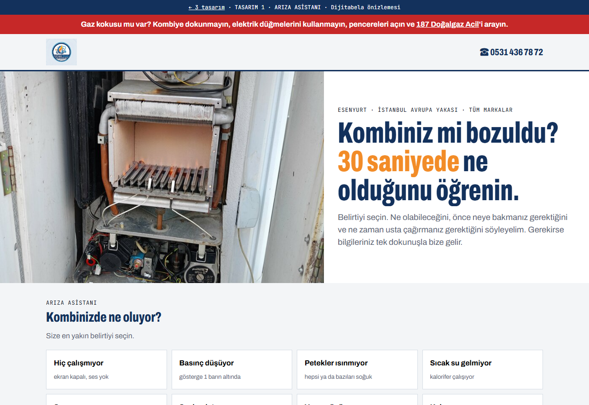
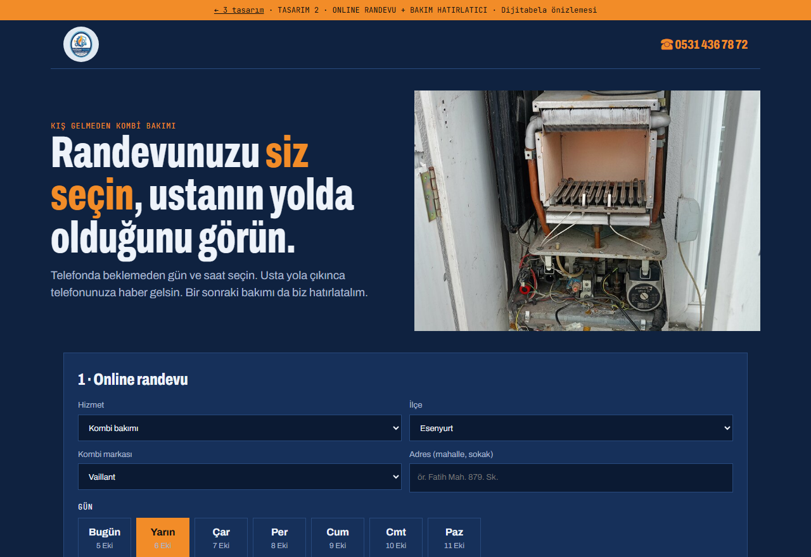
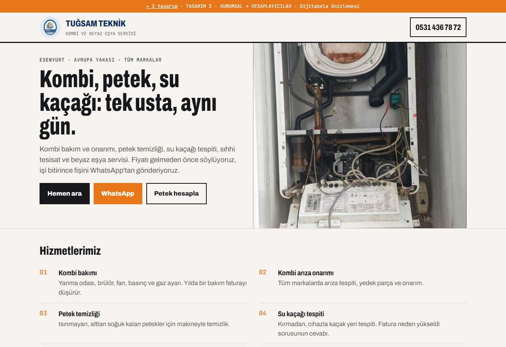

1 · Tasarımınızı seçin

① Arıza Asistanı
Açık zemin, sizin servis fotoğraflarınız. Kombisi bozulan müşteri belirtiyi seçer, ne yapacağını hemen görür.
- 8 belirti: ne olabilir, önce neye bakılır, ne zaman servis
- Hata kodu + marka → WhatsApp
- Gaz kokusunda 187 acil uyarısı

② Online Randevu
Koyu lacivert, turuncu vurgu. Müşteri telefonda beklemeden gün ve saat seçer, ustanın yolda olduğunu görür.
- Gün + saat aralığı, dolu saatler kapalı
- "Usta yolda" takibi
- Yıllık bakım hatırlatıcısı (telefon takvimine)

③ Kurumsal + Hesaplayıcılar
Sade ve güven veren. Tüm hizmetleriniz, markalar ve bölgeler; içinde iki akıllı araç.
- Petek temizliği hesaplayıcı
- 30 dakikalık su kaçağı sayaç testi
- Hizmet bölgeleri + harita
2 · Üç tasarımda da olanlar
- Gerçek iş fotoğraflarınızStok görsel yok. Açtığınız kombiler, yaptığınız bakımlar.
- Tek dokunuşla arama ve WhatsAppTelefonda ekranın altında her zaman.
- Hazır mesajMüşterinin seçtikleri WhatsApp'ınıza bilgileriyle düşer.
- Tüm markalarVaillant, Protherm, Demirdöküm, Baymak, E.C.A., Bosch ve diğerleri.
- Avrupa Yakası bölgeleriEsenyurt, Beylikdüzü, Avcılar, Büyükçekmece, Başakşehir ve diğerleri.
- Google'a uygun altyapıHaritalar kaydınızla birlikte çalışacak şekilde kurulur.
3 · Paketler
Google'da Görün
- Google Haritalar'da Tuğsam Teknik kaydı
- Hizmetler, saatler, fotoğraflar eksiksiz
- Yorum toplama QR'ı
- Aylık kayıt takibi
Google + Site
- Google'da Görün'deki her şey
- Seçtiğiniz tasarımla siteniz
- Arıza asistanı ve hesaplayıcılar
- Alan adı ve hosting 1 yıl dahil
Servis Sistemi
- Google + Site'deki her şey
- Online randevu ve "usta yolda"
- Müşteri ve bakım takip paneli
- Otomatik bakım hatırlatma ve yorum isteği
Fiyatlar Tuğsam Teknik için hazırlandı, KDV hariçtir ve 13 Ekim 2026'ya kadar geçerlidir. Ödeme yarısı başta, yarısı teslimde. Site ve tüm hesaplar sizin adınıza açılır. Arıza asistanındaki bilgiler genel bilgidir, kesin tespiti ustanız yapar.